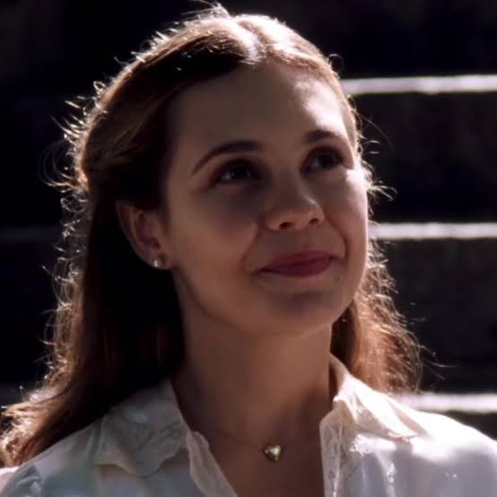

Jovem rica, estudante de Direito, alienada das questões políticas. Vive num mundo de sonhos, poesia e na expetativa amorosa por M.N., um homem casado.
Representa a burguesia e a procura por pureza num mundo em ruínas. A sua religiosidade e refúgio na literatura contrastam com a dura realidade ao seu redor.
Estudante de Ciências Sociais, militante de esquerda e filha de pai baiano e mãe ex-freira alemã. Ativa na resistência contra a ditadura.
O seu namorado, Miguel, está preso pela ditadura. Lia incarna a luta armada, a consciência social e a busca pela justiça num país oprimido.
Estudante de Psicologia, bela e fragilizada. Teve uma infância traumática e busca refúgio nas drogas e num noivado de fachada.
Representa a tragédia pessoal e o desespero. Dividida entre a margem da sociedade e a futilidade, o seu destino simboliza a autodestruição provocada pela dor.